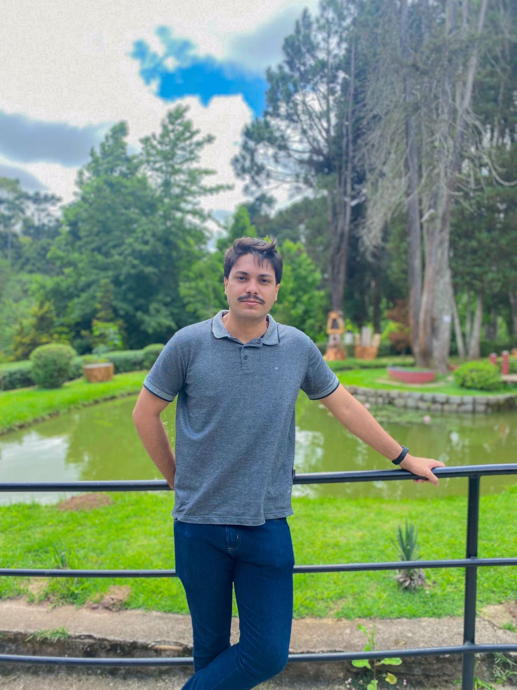

Olá! Sou Lucas Cardoso Alecrim
Cursando Análise e Desenvolvimento de Sistemas, sou um profissional de tecnologia assíduo no mercado e em transição de carreira, migrando de Analista de suporte para desenvolvedor back-end. Possuo conhecimentos em Java, Spring Boot, Javascript, PostgreSQL, SQL, API Rest, Testes Unitários, Git/GitHub e Scrum e algumas outras Linguagens e ferramentas. Estou totalmente empenhado em buscar minha evolução profissional e aprendizado na área de tecnologia!
Saiba Mais!
